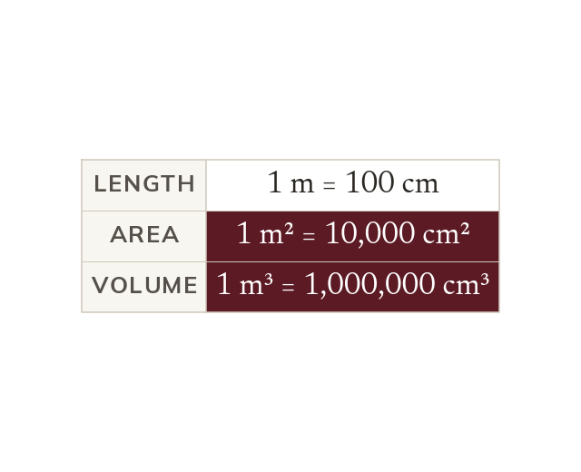
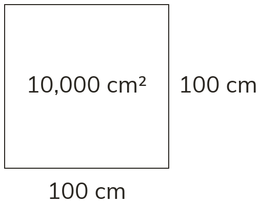
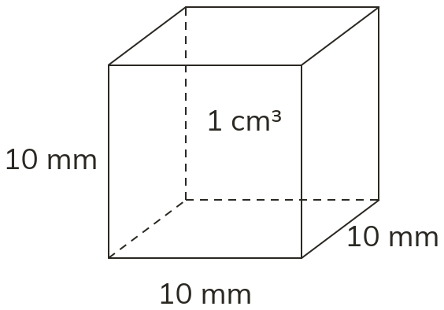
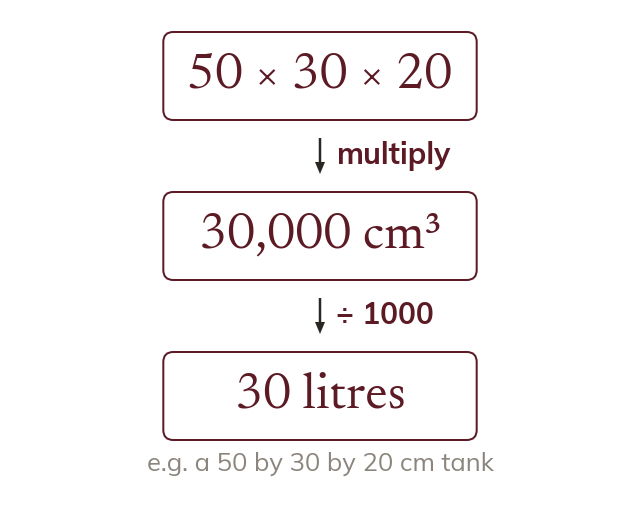

Area squares the factor
1 m = 100 cm, so a square metre is 100 cm by 100 cm. Its area is 100 × 100 = 10,000 cm², not 100 cm².
Flooring is priced per square metre and a tank is measured in centimetres but filled in litres. Changing between these units is where most errors are made.
Work down the page at your own pace. Write every answer in your book first, then click to check it.
Read each card, then follow the worked examples one step at a time.
1 m = 100 cm, so a square metre is 100 cm by 100 cm. Its area is 100 × 100 = 10,000 cm², not 100 cm².

For area, the length factor is squared. For volume, it is cubed. So 1 m³ = 100³ = 1,000,000 cm³.


Pick an answer. If it's wrong, the feedback tells you which mistake it was.
Read each card, then follow the worked examples one step at a time.
Put every length in the same unit before working out an area or volume. So 2 m by 40 cm becomes 200 cm by 40 cm.

Work in one unit, then convert the answer at the end. A capacity uses 1 litre = 1000 cm³.
Pick an answer. If it's wrong, the feedback tells you which mistake it was.
Finished? Next lesson: 10.13.1 Calculating with Decimals.
Log in, then search for a code to practise that skill.